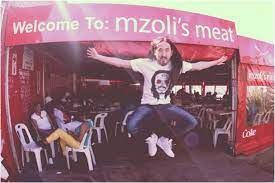
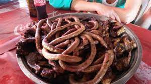
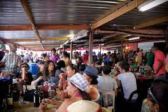
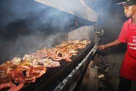

MZOLIS
Mzoli's (also known as Mzoli's Place, Mzoli's Meat, or Mzoli's Butchery) is a butchery in Gugulethu, a township on the outskirts of Cape Town, South Africa. Since Mzoli's opened in early 2003, the restaurant has become a popular gathering spot for Cape Town residents and a tourist attraction. Amongst Gugulethu's residents, Mzoli's Place has a reputation for public drunkenness and disrespect for the local community. Mzoli's is named after the founder and owner, Mzoli Ngcawuzele
The establishment opened in early 2003. Owner Mzoli Ngcawuzele obtained start-up funding from the Development Bank of South Africa, which supports black-owned businesses.[8] In October 2006, an economic study said that Mzoli had "moved, from selling meat informally from a garage, to owning one of the most popular hangouts in Cape Town"
In November 2006, more than 30 restaurant patrons, including a group of tourists and Democratic Alliance councillor Masizole Mnqasela, were arrested in a police raid for drinking in public. The restaurant did not sell alcohol, but Ngcawuzele explained that he could not stop people from bringing their own. The incident generated controversy in the local press. Tour operator Ryan Hunt claimed that police swore at the patrons and threatened people for asking questions. "The police created a dangerous situation. People are always encouraged to visit township attractions, but now they are turned away with that kind of situation," he said. Mnqasela, a member of Cape Town's economic development committee, added, "Mzoli's is internationally acclaimed and is key to township tourism. What kind of message is the police sending?" The African National Congress approved the police actions, citing a need to curtail public drunkenness
